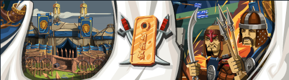
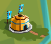
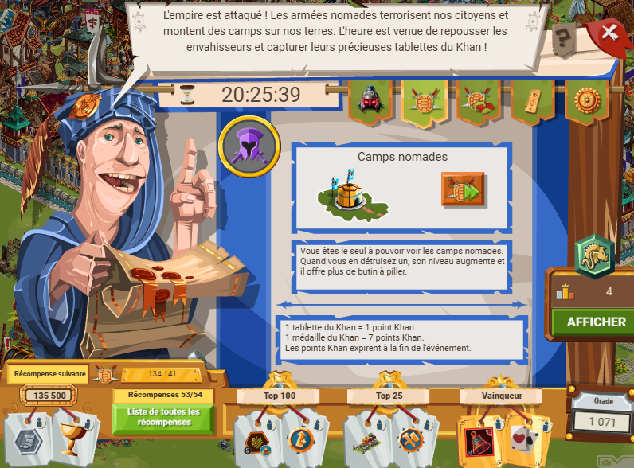
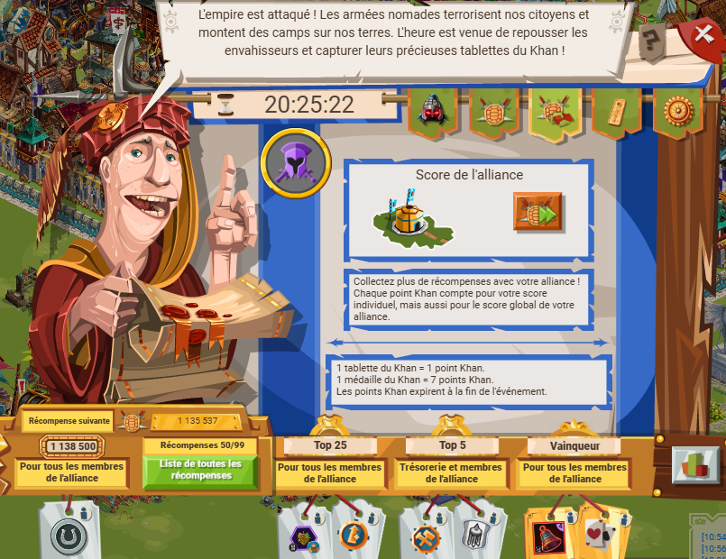
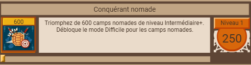
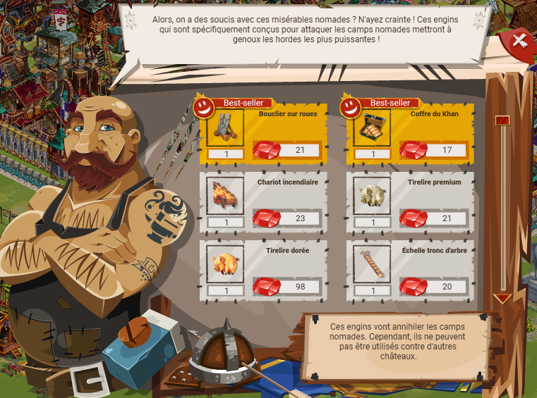
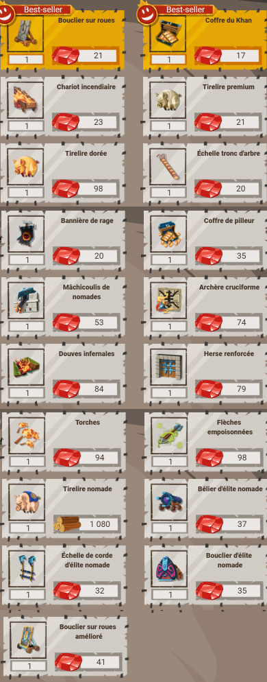
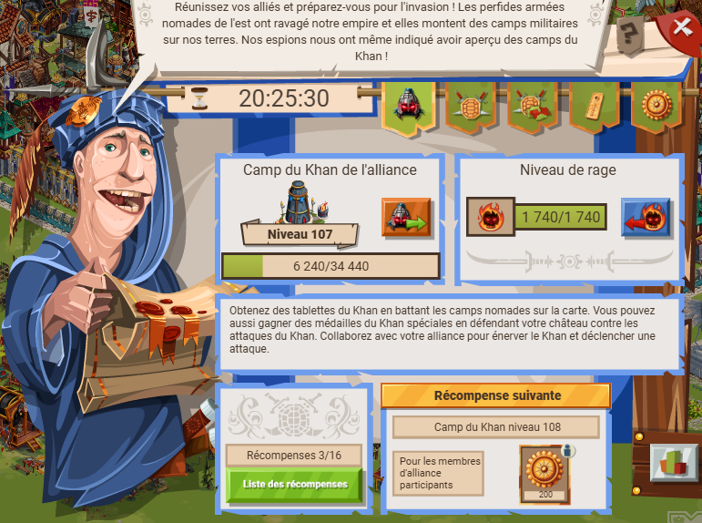
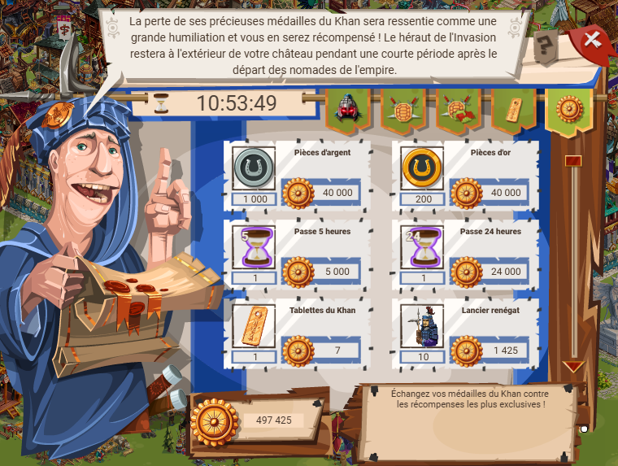
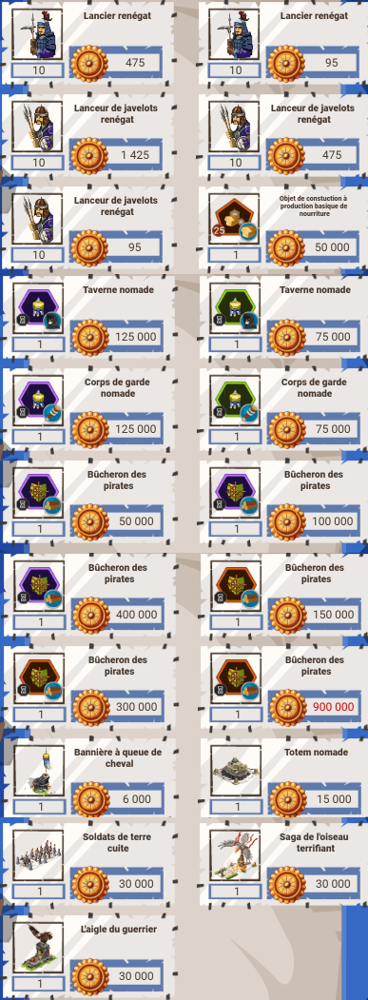

L'invasion nomade est un évènement de 3 jours lors duquel on peut attaquer des camps nomades, y piller beacoup de ressources, des pièces et gagner plein de récompenses. Comme tous les évènements (hormis bérimond, la côte tranchante, les RE et le Lacis) on peut choisir parmi plusieursdifficultées débloquées.

Comme pour d'autres événements, il y a un héraut pour accéder à une boutique de récompense, ainsi qu'un armurier spécifique.


Dans le cas de cet événement, il y a l'armurier nomade qui propose des engins spéciaux "nomades" qui permettent de collecter plus de tablettes en combinant un effet classique et plus de tablettes. De plus, il propose des engins de défense contre les attaques du khan, combinant un effet de défense classique et plus de médailles du khan. Comme pour les samouraï et étrangers/corbeaux, les niveaux de difficultées au-dessus de intermédiaire+ sont débloqués en fonction du nombre d'attaques lancées sur des camps. La progression est visible dans les succès :
Un bonus : comme pour les samouraïs, il y a la tirelire contre ressources, ici nomade. C'est un engin qui permet d'augmenter la quantité de pièces pillées. Évidemment, il est toujours possible de faire un bon score sans devoir faire chauffer la CB ou se ruiner en rubis. Pour ça, rendez-vous chez le maître forgeron et achetez-y les coffres de tablettes khan et autres engins contre des pièces d'argent. Un autre moyen d'en obtenir est d'ouvrir des coffres, et via la roue des richesses inimaginables.
Comme pour l'event des samouraï, il y a un armuruer spécifique qui propose des équipements adaptés à cet event (effet de base + plus de tablettes/attaque) contre des rubis. Il est aussi possible de se procurer ces engins en quantité limitée mais néamnois importante chez le maître-forgeron. En plus des équipements de sièges, il y a aussi des équipements de défense contre les assauts du Khan. Ces équipements de défenses combinent défense "classique" et gain supplémentaire de médailles du khan.


Il y a des camps à taper, avec beaucoup de pillage à la clé. Pour chaque camp, comme pour les samouraïs, c'est 10 victoires puis une attaque possible par heure. Comme pour les samouraïs, attaquer un camp permet de collecter une monnaie qui peut être échangée dans la boutique d'événement. Cette fois, ce sont des tablettes et non des jetons.
Ces tablettes peuvent être échangées contre des récompenses diverses :
Une autre façon de collectionner les récompenses est la progression : pour chaque niveau de difficulté, il y a plus ou moins de récompenses de palier. Par exemple, pour 10k points khan, 500 pièces d'argent et 1,2k pièces d'or pour 20k points khan. Dans ce cas, 1 tablette collectée = 1 point khan.
"La vengeance du Khan" est un événement auparavant accessible seulement au niveau 70 et plus, maintenant accessible bien avant. Dans cet événement, il y a les camps nomades PLUS le camp du khan. Attaquer le camp du khan permet, en plus du pillage habituel (bois-pierre-nourriture-pièces plus fer), d'obtenir des ressources de royaumes (charbon-huile-verre). À chaque attaque du khan, des points de rage sont marqués. Au bout d'un certain nombre de points de rage (barre de progression visible soit chez l'héraut, soit sur le camp du khan), le joueur peut choisir de déclencher une attaque du khan. En fonction de la difficulté, il y a plus ou moins de soldats dans l'attaque. Défendre contre une attaque du khan permet de gagner des pièces ET SURTOUT des médailles du khan, qui ont leur propre boutique pour y être dépensées.

Comme pour les tablettes, la boutique de médailles offre la possibilité de les échanger contre :


Un autre point est le ratio médailles/points khan : une médaille = 7 points khan. Cela rend les provocations d'attaques du khan plus rentables que l'achat d'engins pour ramasser plus de tablettes, particulièrement pour les grosses difficultés (difficile et +) ou même les simples pour économiser des coffres de tablettes nomades.
Pour provoquer les attaques du khan et défendre sans y laisser trop de soldats, c'est toute une stratégie ! Il y a bien sûr des facteurs à maîtriser ABSOLUMENT :